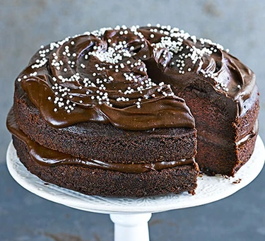
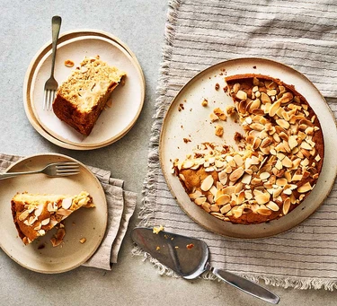
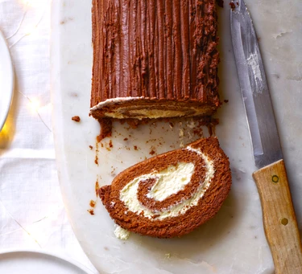
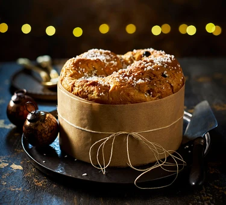
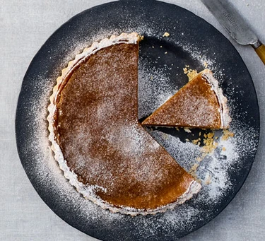
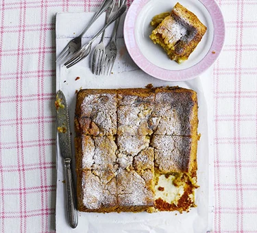
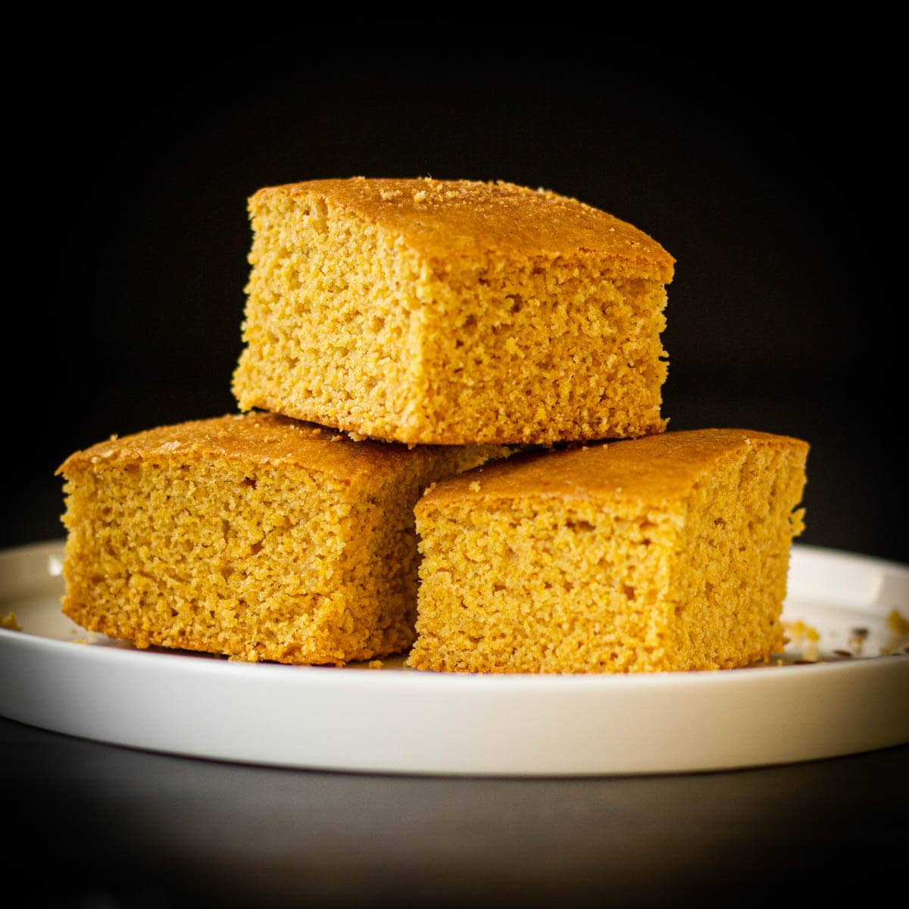
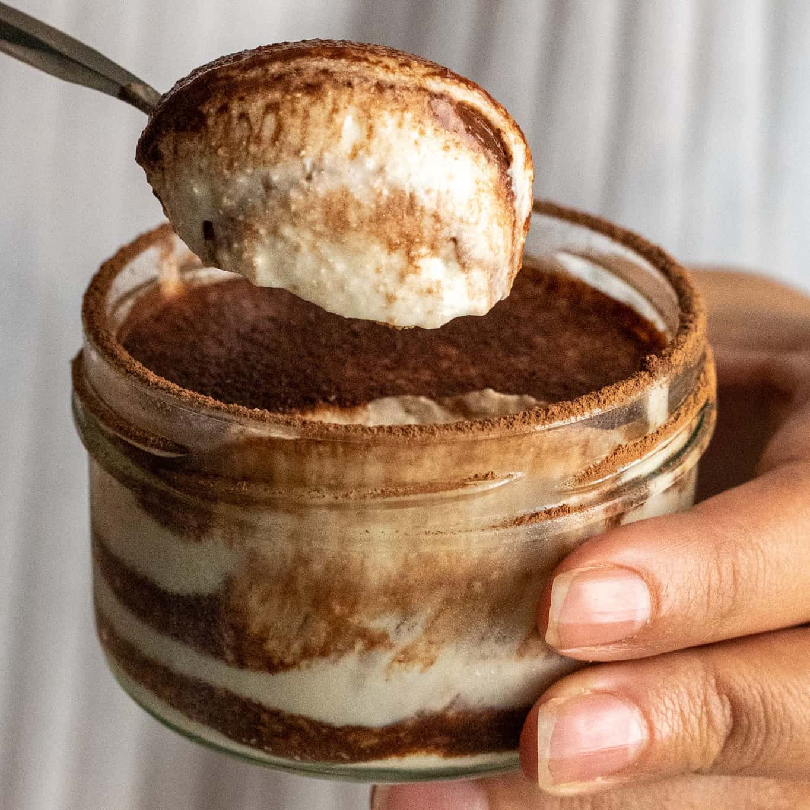

Our Vegan Options
Here you can find some of our Vegan variety options. If you would like something custumized just let us know!







Vegan Corn Cake
Sweet and moist corn cake, perfect for any occasion.

Recipes for Begginers
Try it at home - Our favorite vegan recipes
Ingredients
- 3 large bananas
- 1/2 cup cocoa powder
- 1 1/2 cups raw almond butter